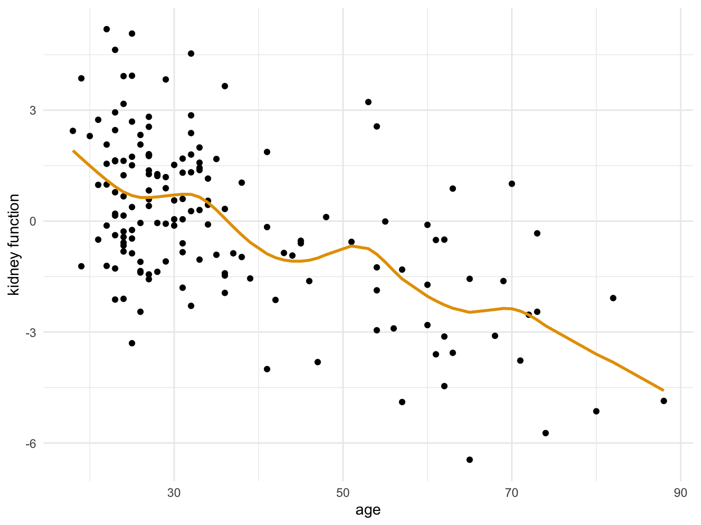

3.5 An application
Here we present an application of what we have learned in this chapter. The application is based on an example in Efron and Hastie (2016).
The data set consists of measurements on the kidney function of 157 individuals. We fit a smoothing spline to the data and plot.
kidney.df <- read.table("data/kidney.dat", header = TRUE)
kidney.spline <- smooth.spline(kidney.df$age, kidney.df$tot, df = 10)
kidney.df$spline <- predict(kidney.spline, x = kidney.df$age)$y
library(ggplot2)
cbp1 <- c("#999999", "#E69F00", "#56B4E9", "#009E73",
"#F0E442", "#0072B2", "#D55E00", "#CC79A7")
ggplot(kidney.df, aes(x = age, y = tot)) +
geom_point() +
geom_line(aes(y = spline), color = cbp1[2], size = 1) +
labs( y = "kidney function", x="age") +
theme_minimal()

Figure 3.2: Kidney function vs age
Now we can predict the kidney function of a new individual of age 50.
## [1] -0.7232874Let us use bootstrap to find the standard deviation of this prediction and construct a CI.
library(boot)
T <- function(data,index){
s <- smooth.spline(data$age[index], data$tot[index], df = 10)
predict(s, x = 50)$y
}
boot.result<- boot(data = kidney.df, statistic = T, R = 1000)
boot.result##
## ORDINARY NONPARAMETRIC BOOTSTRAP
##
##
## Call:
## boot(data = kidney.df, statistic = T, R = 1000)
##
##
## Bootstrap Statistics :
## original bias std. error
## t1* -0.7232874 0.0455268 0.6037417## BOOTSTRAP CONFIDENCE INTERVAL CALCULATIONS
## Based on 1000 bootstrap replicates
##
## CALL :
## boot.ci(boot.out = boot.result, type = "bca")
##
## Intervals :
## Level BCa
## 95% (-2.0496, 0.3520 )
## Calculations and Intervals on Original ScaleReferences
Efron, Bradley, and Trevor Hastie. 2016. Computer Age Statistical Inference. Vol. 5. Cambridge University Press.